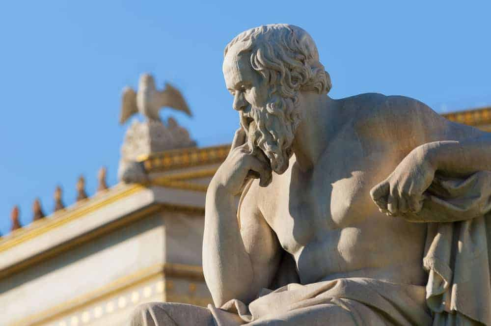
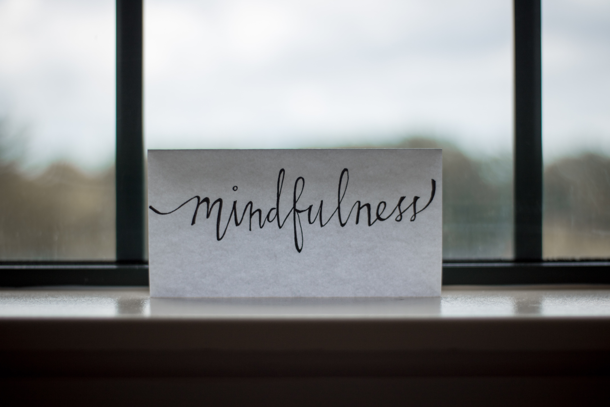

My Hobby

I have a hobby to do an exercise. I have two favourite kind of exercise. It is playing football and strength training.
But the most I do is strength training. Incase you don't know, strength training is an exercise you do with a weight.
You can do it with dumbbell, barbell, machine, or even with your body weight. You can do it in gym or home. But I prefer
to do it in the gym because the equipment there is make me easy to train all my muscle part. The most important things in
strength training is to train all of your body part such like upper body which is chest, back, shoulder, bicep, tricep and your lower body which is
abs and legs. To do a strength training, you don't need to use a heavy weight, the most important thing is to do a good form and technique
so you won't injured your body and you can gain a muscle from it. After you know how to perform a good technique, the things you must remember is
if you want to gain muscle, you must train close to failure. It means you must do a repetition of your exercise until you can't do any repetition anymore.
It makes the micro damages on your muscle, so your muscles will increase it size to response the damage from the mechanical tension. That's called a hypertrophy.
My motivation

I have a reason why I love my hobby. As a male, I want look strong and having a character. When I was a kid I love to watch
football match and I have an idol. He is Cristiano Ronaldo, sometimes when he scores, he take off his shirt and I amazed by his body shape
I wonder if I have that body I will be proud.
Having a good and healthy body isn't for everyone. You can't buy it, you can't receive it from anybody. The only way you can get it is to dedicate yourself to do exercise,
eating good food and have a nice rest. So it means you must have good mindset, good lifestyle, and good time management. Because it is impossible for someone to having a healthy
without time and money. So you must distribute your time to make money, preparing your meal, exercising, and take a proper rest. As I said before, having a good and healthy
means having a character.
The benefit of strength training

There are many benefit if you do strength training. From a general benefit for instance, a human body is build to be moved. We are a homo sapiens, in the past we getting a food
by hunting and farming, it require our body to move and god already designed our body to do it. But nowadays, human are more likely to not move our body do to the technology which
make us easier to do our job. It makes our body can't do its function-well. If we lack of moving our body, we easily to get a disease. One of the best exercise you can do is strength training.
Strength training can also increase our testosterone hormone. It's the most important hormone in man's body. In modern term, this hormone is important to control our mood and energy,
so it can help to do our responsibility and job in daily activity.
But doing a strength training isn't only good for your health. As socrates said :
"No man has the right to be an amateur in the matter of physical training.
It is a shame for a man to grow old without seeing the beauty and strength of which his body is capable."
I am agree with this Socrates's quotes, as a human especially a man,
must have a strong body. Because a man are build to hunt and to be a leader. Having a good body will make you more confident, you will be respected by others, and you will be more safe.